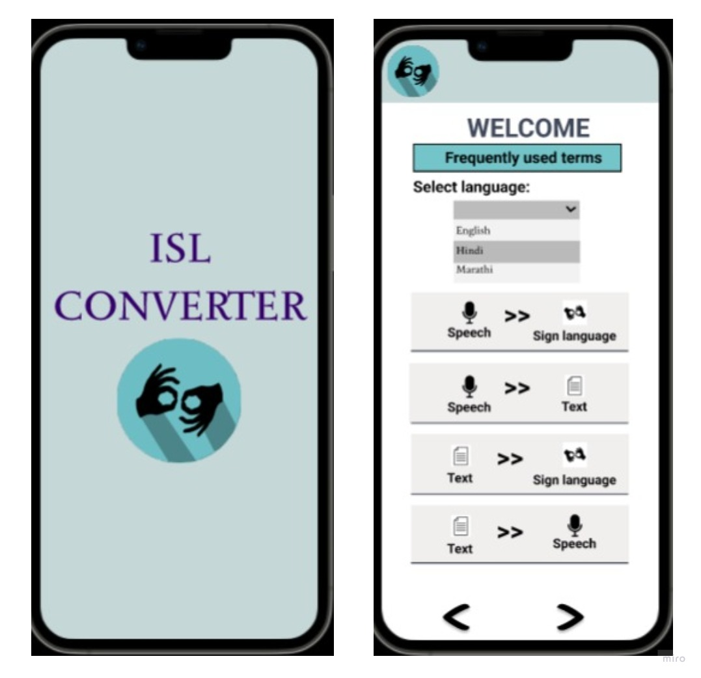
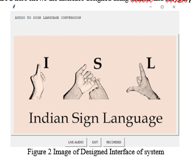

KOUSHIK BETHU
ABOUT ME
I'm a second-year B.Tech student specializing in Artificial Intelligence and Machine Learning at Parul University. Proficient in C, Python, Java, HTML, CSS, MySQL, DBMS, and OOP concepts, I'm passionate about leveraging AI to solve real-world problems.I've actively participated in various competitions and projects, including a district-level and state-level science exhibition where I secured 1st and 2nd positions, respectively. I also contributed to a hackathon project, developing an Audio to ISL converter.My academic journey has been rewarding, culminating in a state third rank in higher secondary education. I'm excited to continue exploring the potential of AI and ML and contribute to innovative solutions...


Skills And TechStack
Programming
➢➣➤ Java Language
➢➣➤ Python Language
➢➣➤ C Language
➢➣➤ Structured Query Language
➢➣➤ Data Structure And Algorithms
➢➣➤ Object Orientered Programming
Web Development
➢➣➤ HTML
➢➣➤ CSS
Tools & Libraries
➢➣➤ Git & Github
➢➣➤ VS Code
➢➣➤ PyCharm
My Projects
1. Audio to ISL(Indian signLanguage) Converter
 ➢➣➤ The Audio to ISL (Indian Sign Language) Converter project aims to make communication easier for people who are hearing or speech impaired, especially when interacting with those who don't know sign language.
➢➣➤ The system works by capturing audio, converting it into text using speech recognition, and then translating that text into Indian Sign Language gestures.
➢➣➤ This is done through a database or machine learning model trained to recognize ISLsigns.
➢➣➤ By combining speech-to-text, natural language processing (NLP), and computer vi sion, the project enables real-time translation, helping improve accessibility for the deaf and hard-of-hearing community.
My Achivements
➢➣➤ I was the State Third Rank holder in my Higher Secondary, in Telangana State(2023).
➢➣➤ I got the first place in district level and Second place in State level in 47th National level Science Exhibition, in my schooling academics.
➢➣➤ I was participated in district level science fair